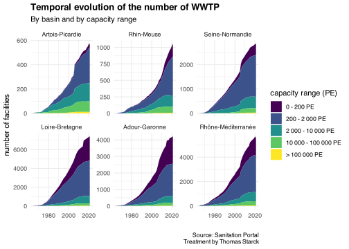
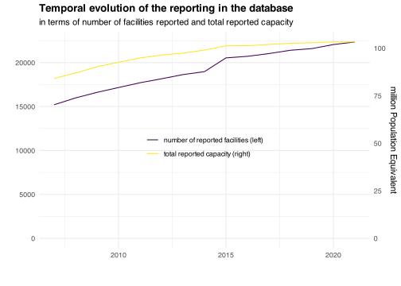
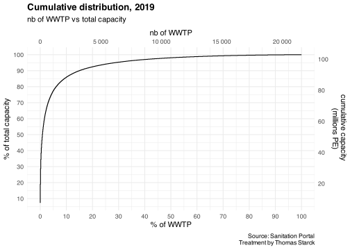
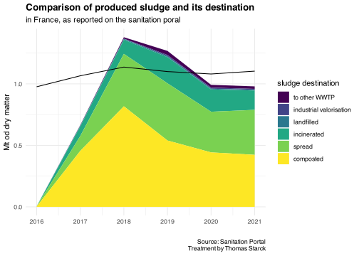

knitr::opts_chunk$set(warning=F, message=F, results=F, dev='svg')library(tidyverse) #loads multiple packages (see https://tidyverse.tidyverse.org/)#core tidyverse packages loaded:# ggplot2, for data visualisation. https://ggplot2.tidyverse.org/# dplyr, for data manipulation. https://dplyr.tidyverse.org/# tidyr, for data tidying. https://tidyr.tidyverse.org/# readr, for data import. https://readr.tidyverse.org/# purrr, for functional programming. https://purrr.tidyverse.org/# tibble, for tibbles, a modern re-imagining of data frames. https://tibble.tidyverse.org/# stringr, for strings. https://stringr.tidyverse.org/# forcats, for factors. https://forcats.tidyverse.org/# lubridate, for date/times. https://lubridate.tidyverse.org/#also loads the following packages (less frequently used):# Working with specific types of vectors:# hms, for times. https://hms.tidyverse.org/# Importing other types of data:# feather, for sharing with Python and other languages. https://github.com/wesm/feather# haven, for SPSS, SAS and Stata files. https://haven.tidyverse.org/# httr, for web apis. https://httr.r-lib.org/# jsonlite for JSON. https://arxiv.org/abs/1403.2805# readxl, for .xls and .xlsx files. https://readxl.tidyverse.org/# rvest, for web scraping. https://rvest.tidyverse.org/# xml2, for XML. https://xml2.r-lib.org/# Modelling# modelr, for modelling within a pipeline. https://modelr.tidyverse.org/# broom, for turning models into tidy data. https://broom.tidymodels.org/# Use the conflicted package (<http://conflicted.r-lib.org/>) to force all conflicts to become errors#loading relevant packageslibrary(cowplot) #for plot_grid()library(patchwork) #for multiple ggplot graphslibrary(sf) #for spherical geometry operations#at first with sf there was an issues with GDAL and PROJ librairies that were not found. I found the answer here https://github.com/r-spatial/sf/issues/2302 and here https://github.com/r-spatial/sf/issues/2298. I uninstalled the sf package and manually installed it with install.packages('sf', repos = c('https://r-spatial.r-universe.dev')). This changed the version #setting graphs themetheme_set(theme_minimal() +theme(plot.title =element_text(face="bold")) )#setting viridis theme for colorsscale_colour_continuous <- scale_colour_viridis_cscale_colour_discrete <- scale_colour_viridis_dscale_colour_binned <- scale_colour_viridis_b#setting viridis theme for fillscale_fill_continuous <- scale_fill_viridis_cscale_fill_discrete <- scale_fill_viridis_dscale_fill_binned <- scale_fill_viridis_bSource <-"Source: Sanitation Portal\nTreatment by Thomas Starck"Year_analysis <-2019# Load the function filesource("functions.R")
Some information about the variables can be found on the glossary on the website. There are many variables in the table, more than 100. We select only a part of them, about 40. They are related to :
Location and ID of the facilities : latitude and longitude of the plant and of its discharge ; department and city number ; name of the facility
BDERU <- file_BDERU %>%select(basin_reported =` "Libellé du bassin"`, Year,#city infosINSEE_dep =`Numéro département`,INSEE_com =`Code INSEE commune principale`, #also INSEE commune implantationcity_EH =`Taille agglomération (EH)`, #careful some cities reported multiple times (because multiple WWTP for 1 city)city_sum_max_incoming_EH =`Maximum de la somme des pollutions entrantes (EH)`, #for when several WWTP in 1 citycity_sum_nominal_capa_EH =`Somme des capacités nominales (EH)`, #for when several WWTP in 1 city#WWTP infoscreation_year =`Année de création`,lat_STEU =`Latitude du STEU (WGS84)`,long_STEU =`Longitude du STEU (WGS84)`,lat_discharge =`Latitude du rejet (WGS84)`,long_discharge =`Longitude du rejet (WGS84)`,code_WWTP =`Code du STEU`,name_WWTP =`Nom du STEU`,discharge_environment =`Type du milieu du rejet`,network_type =`Type de réseau majoritaire`,#WWTP capacity anf flowqPE_bin =`Tranche obligation`,capacity =`Capacité nominale en EH`,capacity_kgDBO5 =`Capacité nominale en Kg de DBO5`,max_incoming_EH =`Charge maximale entrante (EH)`,flow_m3_d =`Débit entrant en m3/j`,percentil95_m3_day =`Percentile95 calculé en m3/j`,percent_direct_discharge_dry_weather =`Pourcentage rejet direct temps sec`,#Tretment typetreatment =`Filière eau principale`,sludge_treatment =`Filière boues principale`,bio_treatment =`Niveau traitement existant : biologique`, #il y a aussi le traitement requis pour bio, N et P (au-delà de l'existant)N_treatment =`Niveau traitement existant : azote`,P_treatment =`Niveau traitement existant : phosphore`,sanitization_treatment =`Niveau traitement existant : désinfection`, #boues produitessludge_production =`Prod boues sans réactif (tMS/an)`,sludge_reagent_consumption =`Quantité réactifs utilisés (t/an)`,sludge_spread =`Quantité épandage agricole (tMS/an)`,sludge_incinerated =`Quantité incinérée (tMS/an)`,sludge_compost =`Quantité Compostage «produit» (tMS/an)`,sludge_landfill =`Quantité mise en décharge (tMS/an)`,sludge_industrial_valorisation =`Quantité en valorisation industrielle (tMS/an)`,sludge_to_other_WWTP =`Qté envoyée sur autre STEU (tMS/an)`, #sensibilitéN_sens =`Sensibilité azote`, #aussi la dateP_sens =`Sensibilité phosphore`, #aussi la date#suiviautosurveillance_manual =`Existence manuel autosurveillance STEU`,#conformitécompliance_DBO =`Conformité ERU perf DBO`,compliance_DCO =`Conformité ERU perf DCO`,compliance_NGL =`Conformité ERU perf NGL`,compliance_PT =`Conformité ERU perf PT`,#pas compris : "Compostage déchet", "transit", "unité de traitement de sous produit", centre de séchage", "unité de méthanisation"#intéressant : liste des communes raccordées (séparées par |)date_operation_begin =`Date de mise en service du STEU`,date_operation_end =`Date de mise hors serv du STEU`)#we focus on the year of begin of operation and not creation year, because it is smoother for the followingBDERU <- BDERU %>%mutate(date_operation_begin =as.Date(date_operation_begin, '%Y/%m/%d'),year_operation_begin =as.numeric(format(date_operation_begin,'%Y')),#sometimes inconstitent year, in that case we take the creation yearyear_operation_begin =case_when( (year_operation_begin != creation_year) & (year_operation_begin<1950) ~ creation_year, T ~ year_operation_begin ) )#recomputes and reorders WWTP by their share of total capacityBDERU <- BDERU %>%mutate(PE_bin =case_when( capacity <200~"0 - 200 PE", (capacity >=200) & (capacity <2000) ~"200 - 2 000 PE", (capacity >=2000) & (capacity <10000) ~"2 000 - 10 000 PE", (capacity >=10000) & (capacity <100000) ~"10 000 - 100 000 PE", capacity >=100000~"> 100 000 PE", T ~"unreported PE" ) )BDERU$PE_bin <-factor( BDERU$PE_bin, levels =c("unreported PE","0 - 200 PE", "200 - 2 000 PE", "2 000 - 10 000 PE","10 000 - 100 000 PE", "> 100 000 PE" ) )BDERU <- BDERU %>%mutate(sensitivity =case_when( N_sens =="Oui"& P_sens =="Non"~"Only N sensible", P_sens =="Oui"& N_sens =="Non"~"Only P sensible", P_sens =="Oui"& N_sens =="Oui"~"N and P sensible", T ~"Not sensible" ))#reorders sensitivity zonesBDERU$sensitivity <-factor( BDERU$sensitivity, levels =c("Not sensible","Only N sensible","Only P sensible", "N and P sensible" ) )
We correct the reported basins. Check here for the corresponding number to the corresponding basin (i.e. 03 = Seine-Normandie)
Code
#remove some code WWTP (closed ones and foreign)BDERU <- BDERU %>%filter(!(substr(code_WWTP, 1, 2) %in%c("NO", #for NOSTEU"PR", #for "PROVISOIRE""CL", "ST", #for CLO and STEUCLO"AL", "BE", "CH", "ES", "LU", "MC", "HS"#for other countries ) ) )#sometimes empty space at the beginning of the code : we correct thisBDERU <- BDERU %>%mutate(code_WWTP =case_when(substr(code_WWTP, 1, 1)==" "~sub(" ", "", code_WWTP), T ~ code_WWTP ) )#sometimes missing 0 at the beginning of the code : we correct thisBDERU <- BDERU %>%mutate(code_WWTP =case_when(substr(code_WWTP, 1, 1)=="8"~paste0("0", code_WWTP),substr(code_WWTP, 1, 1)=="6"~paste0("0", code_WWTP),substr(code_WWTP, 1, 1)=="3"~paste0("0", code_WWTP),substr(code_WWTP, 1, 1)=="2"~paste0("0", code_WWTP), T ~ code_WWTP ) )#basins based on codeBDERU <- BDERU %>%mutate(basin_code=case_when(substr(code_WWTP, 1, 2) =="01"~"Artois-Picardie",substr(code_WWTP, 1, 2) =="02"~"Rhin-Meuse",substr(code_WWTP, 1, 2) =="03"~"Seine-Normandie",substr(code_WWTP, 1, 2) =="04"~"Loire-Bretagne",substr(code_WWTP, 1, 2) =="05"~"Adour-Garonne",substr(code_WWTP, 1, 2) %in%c("06", "12") ~"Rhône-Méditerranée", T ~"Overseas and others" ))BDERU$basin_code <-factor( BDERU$basin_code, levels =c("Artois-Picardie", "Rhin-Meuse", "Seine-Normandie", "Loire-Bretagne", "Adour-Garonne","Rhône-Méditerranée","Overseas and others" ) )BDERU <- BDERU %>%mutate(basin_reported =case_when( basin_reported %in%c("GUADELOUPE ", "MAYOTTE ", "REUNION ","GUYANE ","MARTINIQUE ","GUADELOUPE","REUNION","GUYANE","MARTINIQUE") ~"Overseas and others", basin_reported %in%c("SEINE-NORMANDIE ", "SEINE-NORMANDIE") ~"Seine-Normandie", basin_reported %in%c("CORSE","RHONE-MEDITERRANEE ","RHONE-MEDITERRANEE-CORSE ","RHONE-MEDITERRANEE-CORSE") ~"Rhône-Méditerranée", basin_reported %in%c("LOIRE-BRETAGNE ","LOIRE-BRETAGNE","LOIRE-BRETAGNE ") ~"Loire-Bretagne", basin_reported %in%c("ADOUR-GARONNE ","ADOUR-GARONNE") ~"Adour-Garonne", basin_reported %in%c("ARTOIS-PICARDIE ","ARTOIS-PICARDIE") ~"Artois-Picardie", basin_reported %in%c("RHIN-MEUSE ","RHIN-MEUSE") ~"Rhin-Meuse" ) )BDERU$basin_reported <-factor( BDERU$basin_reported, levels =c("Artois-Picardie", "Rhin-Meuse", "Seine-Normandie", "Loire-Bretagne", "Adour-Garonne","Rhône-Méditerranée","Overseas and others" ) )
Sometimes the reported basin does not match what would be expected based on the individual WWTP code. This concerns ~150 WWTP (out of ~20,000 in Fance, 0.8%). In terms of nominal capacity this is 0.2 million population equivalent ((out of ~100 million in France, 0.2%). The largest WWTP in this case is 30,000 population equivalent.
We chose to remove all the concerned WWTP from the database. In a further version, we could manually reconcile the data.
Code
#to see when reported basin is different than code in 2020, mostly small onestemp <- BDERU %>%filter( basin_reported!=basin_code ) %>%select( Year, basin_code, basin_reported, name_WWTP, code_WWTP, capacity, PE_bin )g1 <-ggplot(temp) +geom_bar(aes(Year, fill=PE_bin)) +labs(title ="WWTP with mismatching basin",subtitle ="number of WWTP",caption="\n", x="", fill="", y="", ) +theme(legend.position ="bottom") g2 <-ggplot(temp) +geom_col(aes(Year, capacity/10^6, fill=PE_bin)) +labs(title ="",subtitle ="capacity (million population equivalent)",caption=Source, x="", fill="", y="", ) +theme(legend.position ="none")g1 + g2 +plot_layout(guides ="collect") &theme(legend.position ='bottom')
Code
#get unique ID of mismatching WWTPtemp <- temp %>%select(code_WWTP)BDERU <-anti_join(BDERU, temp, by="code_WWTP")#remove second basin column now uselessBDERU <- BDERU %>%select(-basin_code,basin = basin_reported )
We use the creation dates of each station create a database for the period 1960-2020. Note that we use the year 2014 to determine the characteristics of the WWTP, so the further we go back in time, the less reliable is the database. Indeed for instance when a WWTP change capacities, it usually changes SANDRE codes. However it allows to see the temporal evolution of the number of stations.
Code
f_file_WWTP_all_years <-function(year_min, year_max, dataset){ data <- dataset %>%filter(Year == year_max) %>%select(code_WWTP, year_operation_begin)#initialisation file <- data %>%filter(year_operation_begin<=year_min) %>%mutate(Year = year_min)#loop to add WWTP to each yearfor (i in (year_min+1):year_max) { temp <- data %>%filter(year_operation_begin==i) %>%mutate(Year = i) temp2 <- data %>%filter(year_operation_begin<=i) %>%mutate(Year = i) file <-bind_rows(file, temp, temp2) }return(file)}# Il faudrait aussi voir quand les stations ont été fermées ?temp <-f_file_WWTP_all_years(1965, 2014, BDERU)temp <- temp %>%distinct() #understand why doublonstemp <-left_join( temp %>%select(-year_operation_begin), BDERU %>%filter(Year==2014) %>%select(-Year), by=c("code_WWTP"))BDERU <-bind_rows( temp %>%filter(Year<2014), BDERU )
There seem to have some incoherence with a large spike in the reporting rate in 2006 for some basins.
Code
temp <- BDERU %>%select(Year, basin, capacity, PE_bin) %>%group_by(Year, basin, PE_bin) %>%summarise(n =n(),capacity =sum(capacity, na.rm = T) )ggplot(temp %>%filter(basin!="Overseas and others")) +geom_area(aes(Year, n, fill=PE_bin)) +facet_wrap(vars(basin), scales="free_y") +labs(x="", y="number of facilities",fill="capacity range (PE)",title ="Temporal evolution of the number of WWTP",subtitle ="By basin and by capacity range",caption = Source )

There are big discontinuities in the total capacity evolution. It is probably due to the fact that some big WWTP “appear” when they are etended. For instance the big spike for Seine-Normandie in 2006 is probably the Seine-Aval WWTP, even though it exists since 1940.
Code
ggplot(temp %>%filter(basin!="Overseas and others")) +geom_area(aes(Year, capacity/10^6, fill=PE_bin)) +facet_wrap(vars(basin), scales="free_y") +labs(x="", y="million of population equivalent",fill="capacity range (PE)",title ="Temporal evolution of total capacity",subtitle ="By basin and by capacity range",caption = Source )
For these reasons we focus on the years starting 2007, when the whole is smoother.
Code
BDERU <- BDERU %>%filter(Year>2006)
We leave empty values for sludge data before 2014 (the first year officially reported on the sanitation portal).
temp <- BDERU %>%group_by(Year) %>%summarise(capacity =sum(capacity)/10^6, nb_WWTP =n()) coef <-max(temp$capacity)/max(temp$nb_WWTP)ggplot(temp) +geom_line(aes(Year, nb_WWTP, color ="number of reported facilities (left)")) +geom_line(aes(Year, capacity/coef, color ="total reported capacity (right)")) +scale_y_continuous(limits =c(0, NA),sec.axis =sec_axis(trans=~.*coef, name="million Population Equivalent")) +labs(title ="Temporal evolution of the reporting in the database",subtitle ="in terms of number of facilities reported and total reported capacity",y="", x="", color="", caption ="" ) +theme(legend.position =c(0.5, 0.5) )

The order of July 2015 requires waste water treatment plants to report some self monitoring information regarding their operational data. The level of precision of this reporting is dependant on categories related to the facility capacity, expressed in kgDBO5 per day. When converting this in population equivalent (1 PE = 0.06 kgDBO5/d), this gives the categories of our database, reported in the following graph.
Also note that these categories are used for the minimum performance requirements when the facility is in a nitrogen or phosphorus sensible zone.
Facilities smaller than 200 Population Equivalent (PE) represent 35% of the facilities, and the ones smaller than 2 000 PE represent about 3/4 of the facilities. Plants larger than 10 000 population equivalent make up less thant 10% of the facilities.
Yet in terms of total capacity, Plants < 2 000 PE make only 10% of the total, ant the ones > 10 000 PE represent 70%.
This reflects the highly skewed distribution of the facilities capacities, presented in the 2 following tabs (“Histogramm” and “Cumulative distribution”), which use a finer scale than the 5 catgories presented here.
Code
temp <- BDERU %>%filter(is.na(capacity)==F) %>%select(Year, capacity, PE_bin) %>%group_by(Year, PE_bin) %>%summarise(`capacity (million PE)`=sum(capacity)/10^6,`number of stations`=n() ) %>%gather(key=capacity_or_n, value = value, `capacity (million PE)`, `number of stations`)
ggplot(temp) +geom_area(aes(Year, value, fill=PE_bin), alpha=.8) +facet_wrap(vars(capacity_or_n), scales="free") + viridis::scale_fill_viridis(discrete = T) +labs(title="Reporting in the database",subtitle ="For each capacity category",x="", y="", fill="nominal capacity \n(Population Equivalent)",caption = Source )
Code
ggplot(temp) +geom_area(aes(Year, value, fill=PE_bin), position ="fill", alpha=.8) +facet_wrap(vars(capacity_or_n), scales="free") + viridis::scale_fill_viridis(discrete = T) +labs(title="Reporting in the database",subtitle ="Proportion of each capacity category",x="", y="", fill="nominal capacity \n(Population Equivalent)",caption = Source )
Here we present the distribution at a finer resolution than the previous 5 administrative categories. As in the “Large categories” tab, we present both the distribution of the number of facilities and the distribution of the total capacity.
Code
#mieux si on arrive à faire un double axe ?temp <- BDERU %>%filter(Year==Year_analysis)ggplot(temp) +geom_histogram(aes(capacity, fill ="Nb of facilities"), n=100, alpha=.4, stat="density") +geom_histogram(aes(capacity, weight = capacity, fill="Nb of facilities weighted by capacity"), n=100, alpha=.4, stat="density") +theme(legend.position =c(0.7,0.8), ) +labs(x="Waste Water Treatment Plant Capacity \n(Population Equivalent)",y="Distribution density",fill="Distribution of",title =paste("WWTP capacities distribution,", as.character(Year_analysis)),subtitle ="raw or weighted by capacity",caption = Source ) +scale_x_log10(labels = scales::label_number(drop0trailing =TRUE))
The capacity distribution of waste water treatment plants is extremely skewed, as shown in the graph below.
About 0.1% of the waste water treatment plants (20 facilities) represent 20% of the total installed capacity
About 1% of the waste water treatment plants (200 facilities) represent 50% of the total installed capacity
About 2% of the waste water treatment plants represent 66% of the total installed capacity
About 10% of the waste water treatment plants represent 85% of the total installed capacity
To help visualize this skewed distribution, we also present the same graph in a log-log scale (tab “Nb of WWTP vs Capacity (log scale).
Finally a focus is made on Zipf’s law, which is well known for the size distribution of cities and might be applied to waste water treatment plants capacities.
ggplot(temp) +geom_step(aes(x = percent_rank, y = percent_cumulative_capacity) ) +scale_x_continuous(breaks =seq(0, 100, by=10),sec.axis =sec_axis(trans=~.*coef, name="nb of WWTP",labels = scales::label_number(drop0trailing =TRUE) ) ) +scale_y_continuous(breaks =seq(0, 100, by=10),sec.axis =sec_axis(trans=~.*coef2, name="cumulative capacity \n(millions PE)",breaks =seq(0, 100, by=20) ), ) +theme(legend.position ="none") +labs(title =paste("Cumulative distribution,", Year_analysis),subtitle="nb of WWTP vs total capacity",x="% of WWTP", y="% of total capacity",caption = Source )

Code
ggplot(temp) +geom_step(aes(x = percent_rank, y = percent_cumulative_capacity)) +scale_x_log10(labels = scales::label_number(drop0trailing =TRUE),sec.axis =sec_axis(trans=~.*coef, name="nb of WWTP",labels = scales::label_number(drop0trailing =TRUE))) +scale_y_continuous(breaks =seq(0, 100, by=10),sec.axis =sec_axis(trans=~.*coef2, name="cumulative capacity \n(millions Population Equivalent)",breaks =seq(0, 100, by=20) ) ) +theme(legend.position ="none") +labs(title =paste("Cumulative distribution,", Year_analysis),subtitle="nb of WWTP vs total capacity",x="% of WWTP", y="% of total capacity",caption = Source )
Here is a defintion of Zipf law applied to cities :
It is a rank/size distribution rule applied to cities, which consists in ranking them according to their population rank. The relationship between the population of each city and its rank would be a constant: thus, the first city is more populated than the second, as is the relationship between the second and the third, etc. In a double logarithmic scale, in x and y, the curve of the set of points representing the population and the rank of the cities follows a straight line of adjustment.
It can also be applied to toher instances, such as word frequencies in a large text. One limitation of its application to cities is that it is dependant on the administrative limits, which are arbitrary and not necessary representative of the continuity of a metropolitan area. One may expect that it would be more accurate for distribution of Waste Water Treatment Plant, which is linked to the distribution of cities but is less prone to “administrative” limitations and more “physical”.
In our case, it might be possible to see a Zipf law for the first 10 000 waste water treatment plants, which represent about 50% of the total number of facilities (and 98% of the national capacity). However, it must be kept in mind that the Zipf law should be used with caution.
Code
ggplot(temp) +geom_point(aes(x = rank_STEU, y = capacity)) +labs(x="Waste Water Treatment Plant \n(ranked by capacity)",y=" Waste Water Treatment Plant capacity\n(Population Equivalent)",title =paste("WWTP capacity vs rank,", Year_analysis),subtitle ="looking for a Zipf law",) +scale_x_log10(labels = scales::label_number(drop0trailing =TRUE)) +scale_y_log10(labels = scales::label_number(drop0trailing =TRUE))
In the database, the difference between unreported sludge production and no sludge production is not obvious, since they are both indicated as “0”. Yet it probably does not affect the total sludge production in a very significant way.
As shown by the graphs below, out of the more than 20 000 waste water treatment plants, more than half report 0 sludge production. However, in terms of capacity, they represent less than 10% of the total capacity of the country, which is about 100 million population equivalent. This reflects the highly skewed distribution of plant size and the fact that the “0” sludge production is mostly due to very small facilities
In the following, we will thus consider that total sludge production is rather accurate.
Code
temp <- BDERU %>%mutate(reported_sludge =case_when( sludge_production ==0~"=0", sludge_production >0~">0" ) ) %>%group_by(Year, reported_sludge) %>%summarise(capacity =sum(capacity)/10^6,nb_WWTP =n() )#gathering data for plottemp <- temp %>%gather(key = type, value = value, nb_WWTP, capacity)#plotggplot(temp) +geom_area(aes(Year, value, fill = reported_sludge)) +facet_wrap(vars(type), scales ="free") +labs(x="", y="", fill="Reported sludge production",title ="Facilities reporting 0 or positive sludge production",subtitle ="in terms of capacity (left) or number of plants (right)",caption = ) +theme(legend.position ="top") +xlim(2014, 2020)
To identify outliers, we define thresholds values, estimated through the emprical distribution (below in log and linear scale).
Typically, about 2/3 are between 5 and 15 kg DM/PE, and 95% are between 0 and 20 kg DM/PE. We define the important outliers threshold as a sludge production of more than 1 ton of DM/PE.
Black points represent the outliers with the previously defined threshold. The complete list is below the graph, as well as the manual correction we apply.
#to see outliersoutliers <- outliers %>%select(Year, code_WWTP)#getting all the others columns related to outliersoutliers <- outliers %>%left_join(BDERU, by =c("code_WWTP", "Year"))
Artois-Picardie, 2018, 2020
2018 : BEAUDIGNIES, 011234300000
2018 : HON-HERGIES, 011270900000
2018 : VERTAIN, 011234200000
2020 : BETTENCOURT-RIVIERE, 010826700000
2019 : BETTENCOURT-RIVIERE, 010826700000
2 other small ones
Rhin-Meuse, 2018
2018, CHATEAU SALINS, 025713200139
Seine-Normandie, 2014, 2017
2017 : CHAMPIGNY, 038909301000
2014 : CHEVANNES, 038910201000
2016 : CHAMPCEVRAIS, 038907201000
7 others that do not affect the total because of little sludge production
Loire-Bretagne, 2014, 2015, 2019
2015 : POIRE-SUR-VIE la Blélière, 0485178S0005
2015 : CHAIZE-GIRAUD - chemin des Mottes, 0485045S0001,
2014 : CELLETTES Route de Seur, 0441031S0001,
2015 : BEAULIEU-SOUS-LA-ROCHE - la Guissière, 0485016S0002,
2019 : VALENCAY, 0436228S0003,
2019 : STEU DE: PLOUGUIN (GARO), 0429196S0001
9 others that do not affect the total because of little sludge production
Adour-Garonne, 2018,
2018 : BEYCHAC ET CAILLAU 2, 0533433V007
1 other that does not affect the total because of little sludge production
Rhône-Méditerranée, 2018, 2019, 2020
2018 : BOURG ST ANDEOL, 060907042001,
2021 : ANNOT2, 060904008001,
2021 : BARLES, 060904020001,
2020 : BARLES, 060904020001,
2019 : BARLES, 060904020001,
2019 : CORBIÈRES/VILLAGE, 060904063002
2019 : ENTREVAUX VILLAGE, 060904076001
2019 : LA BRILLANE, 060904034001
2019 : THUILES (LES)/VILLAGE, 060904220001
2019 : PUIMOISSON/VILLAGE, 060904157001
still many in 2019
We change these outliers values, probably reported as kgDM instead of tDM, by dividing them by 1 000.
After the biggest outliers correction, the main source of variability at the metropolitan scale remains the drop in Seine-Normandie in 2016. The general order of magnitude for sludge production is about 1-1.1 Mt of Dry Matter per year.
Once the sludge is produced, it can be used in different ways, as reported by the data base :
agricultural spreading
composting
incineration
landfilled
industrial valorization
sent to another treatment plant
There are some serious reporting issues. Before 2017, sludge destination is virtually not reported. In 2017, the sum of all the destinations represents only half of the total reported production. Only starting 2018 the total is more coherent, with still a mismatch on the order of 10%. This is why the global repartition of produced sludge should be seen as an indicative order of magnitude, valid only at the large scale.
Code
#sludge production at the national scale 2014-2020temp <- BDERU %>%group_by(Year) %>%summarise(sludge_production =sum(sludge_production/10^6, na.rm = T) )#sludge destination at the national scaletemp2 <- BDERU %>%group_by(Year) %>%summarise(across(c( sludge_spread, sludge_incinerated, sludge_compost, sludge_landfill, sludge_industrial_valorisation, sludge_to_other_WWTP, ), ~sum(.x, na.rm=T)/10^6 ) ) %>%rename(spread = sludge_spread, incinerated = sludge_incinerated, composted = sludge_compost, landfilled = sludge_landfill, `industrial valorisation`= sludge_industrial_valorisation,`to other WWTP`= sludge_to_other_WWTP ) %>%gather(key = destination, value = tDM, spread:`to other WWTP` )temp2$destination <-factor( temp2$destination, levels =c("to other WWTP","industrial valorisation","landfilled","incinerated","spread","composted" ) )#synthesis graphggplot(temp2) +geom_area(aes(Year, tDM, fill = destination)) +geom_line(data = temp, aes(Year, sludge_production)) +ylim(0, NA) +xlim(2016, 2021) +labs(x="", y ="Mt od dry matter",fill ="sludge destination",caption = Source,subtitle ="in France, as reported on the sanitation poral", title="Comparison of produced sludge and its destination" )

We identify the biggest outliers. We filter the WWTP when the absolute difference between the sum of destinations and the reported produced sludge is higher than 10 000 t per year (so higher than 1% of the total 1 Mt produced per year).
This yields 42 observations on 2017-2021 (an absolute difference threshold of 1 000 tons yields 400 results). We order them by decreasing order of the absolute difference. Here are the corrections we apply :
060911353002, VAL DE CESSE (INTERCOMMUNALE), in 2018, absolute difference 393438 tons.
060913100002, SAINT-REMY DE PROVENCE, in 2017, absolute difference 273990 tons.
020819000808, GIVET, in 2019, absolute difference 110337 tons.
060906157005, VENCE-MALVAN 2, in 2019, absolute difference 70043 tons.
060983115001, SAINTE-MAXIME LA NARTELLE, in 2018, absolute difference 47255 tons.
060934069001, CAZOULS LES BEZIERS, in 2019, absolute difference 41579 tons.
028836700498, RAMBERVILLERS, in 2021, absolute difference 28403 tons.
060930212002, REMOULINS, in 2017, absolute difference 27475 tons.
For the following we do not apply any change (large absolute difference mainly due to large production quantities) :
037800501000, PARIS SEINE AVAL, in 2017, 2018, 2020 and 2021
039407401000, PARIS SEINE-Amont in 2017, 2018 and 2019
ggplot(percent_basins) +geom_col(aes(Year, percent*100, fill=destination)) +labs(x="", y="%", caption = Source,title ="Destination of produced sludge in France",subtitle ="reported, not nessarily actual ; see as order of magnitude" ) +facet_wrap(vars(basin))
we use the mean of 2019-2021 to determine our final rate
In the data base, there is information on whether the WWTP is in a N or P sensitive area or not. For more info on N and P sensitive areas, see the page First Synthesis -> Sensitive area.
There are some isolated WWTP with a seemingly erroneous “non sensitive” reporting. This usually concerns very small facilities (< 200 population equivalent).
Code
#loading data to draw French water agencies basinsbasins <- sf::st_read("source_data/maps/water_agencies/simplified_CircAdminBassin2021/CircAdminBassin2021.shp")basins_metropole <- basins %>%filter( NumCircAdm %in%c("01", "02", "03", "04", "05", "06", "12") ) %>%select(basin_name = NomCircAdm, basin_num = NumCircAdm ) %>%mutate(basin_name =case_when( basin_name =="ADOUR-GARONNE"~"Adour-Garonne", basin_name =="ARTOIS-PICARDIE"~"Artois-Picardie", basin_name =="LOIRE-BRETAGNE"~"Loire-Bretagne", basin_name =="RHIN-MEUSE"~"Rhin-Meuse", basin_name =="RHONE-MEDITERRANEE"~"Rhone-Méditerranée", basin_name =="SEINE-NORMANDIE"~"Seine-Normandie", basin_name =="CORSE"~"Rhone-Méditerranée" ) )draw_map_sensitive <-function(map_sf, dataset){ p <-ggplot(map_sf) +geom_point(data = dataset, aes(long_STEU, lat_STEU, color=sensitivity), size=0.3) +geom_sf(fill =NA, color ="black", size =0.3, alpha=.8) +coord_sf(datum =NA, expand =FALSE) +#remove coordinatestheme(panel.background =element_blank()) +labs(x="", y="", )return(p)}#P sensitive WWTPs graphp1 <-draw_map_sensitive( basins_metropole, BDERU %>%filter(Year==2020, basin !="Overseas and others") %>%mutate(sensitivity =case_when( sensitivity %in%c("Only P sensible", "N and P sensible") ~"Yes", T ~"No" ) ) ) +labs(title ="Sensitivity classification of France WWTP",subtitle ="P sensitive",caption ="\n",color ="Sensitive" ) +theme(legend.position ="right") +#biggest points on the legendguides(color =guide_legend(override.aes =list(size=5)))#N sensitive WWTPs graphp2 <-draw_map_sensitive( basins_metropole, BDERU %>%filter(Year==2020, basin !="Overseas and others") %>%mutate(sensitivity =case_when( sensitivity %in%c("N and P sensible") ~"Yes", T ~"No" ) ) ) +theme(legend.position ="none") +labs(title ="",subtitle ="N sensitive",caption = Source )p1 + p2
Export data
Save the data at summarized at the basins and metropolitan scales
Code
#info summarized at the basin scalesBDERU_basin <- BDERU %>%filter(basin !="Overseas and others") %>%group_by(Year, basin) %>%summarise(across(c( sludge_production, sludge_spread, sludge_compost, sludge_landfill, sludge_incinerated, sludge_to_other_WWTP, sludge_industrial_valorisation, capacity ), ~sum(.x, na.rm = T)/10^6#convert in Mt ),nb_WWTP=n() )#summarised at the national metropolitan scaletemp <- BDERU %>%filter(basin !="Overseas and others") %>%group_by(Year) %>%summarise(across(c( sludge_production, sludge_spread, sludge_compost, sludge_landfill, sludge_incinerated, sludge_to_other_WWTP, sludge_industrial_valorisation, capacity ), ~sum(.x, na.rm = T)/10^6#convert in Mt ),nb_WWTP=n() ) %>%mutate(basin="Metropolitan France" )#merge basins and national summarized infosBDERU_basin <-bind_rows(BDERU_basin, temp)#remove sludge data before 2015BDERU_basin$sludge_production[BDERU_basin$Year<2015] <-NABDERU_basin$sludge_spread[BDERU_basin$Year<2015] <-NABDERU_basin$sludge_compost[BDERU_basin$Year<2015] <-NABDERU_basin$sludge_landfill[BDERU_basin$Year<2015] <-NABDERU_basin$sludge_incinerated[BDERU_basin$Year<2015] <-NABDERU_basin$sludge_to_other_WWTP[BDERU_basin$Year<2015] <-NABDERU_basin$sludge_industrial_valorisation[BDERU_basin$Year<2015] <-NA#save dataf_save_csv_files( BDERU_basin,"output_data/basins/","basin_sanitation_portal.csv")
Same but also including capacities categories.
Code
#info summarized at the basin x capacity category scalesBDERU_PE_basin <- BDERU %>%filter(basin !="Overseas and others") %>%group_by(Year, basin, PE_bin) %>%summarise(across(c( sludge_production, sludge_spread, sludge_compost, sludge_landfill, sludge_incinerated, sludge_to_other_WWTP, sludge_industrial_valorisation, capacity ), ~sum(.x, na.rm = T)/10^6#convert in Mt ),nb_WWTP=n() ) #summarised at the national metropolitan x capacity category scaletemp <- BDERU %>%filter(basin !="Overseas and others") %>%group_by(Year, PE_bin) %>%summarise(across(c( sludge_production, sludge_spread, sludge_compost, sludge_landfill, sludge_incinerated, sludge_to_other_WWTP, sludge_industrial_valorisation, capacity ), ~sum(.x, na.rm = T)/10^6#convert in Mt ),nb_WWTP=n() ) %>%mutate(basin="Metropolitan France" )#merge basins and national summarized infosBDERU_PE_basin <-bind_rows(BDERU_PE_basin, temp)#remove sludge data before 2015BDERU_PE_basin$sludge_production[BDERU_PE_basin$Year<2015] <-NABDERU_PE_basin$sludge_spread[BDERU_PE_basin$Year<2015] <-NABDERU_PE_basin$sludge_compost[BDERU_PE_basin$Year<2015] <-NABDERU_PE_basin$sludge_landfill[BDERU_PE_basin$Year<2015] <-NABDERU_PE_basin$sludge_incinerated[BDERU_PE_basin$Year<2015] <-NABDERU_PE_basin$sludge_to_other_WWTP[BDERU_PE_basin$Year<2015] <-NABDERU_PE_basin$sludge_industrial_valorisation[BDERU_PE_basin$Year<2015] <-NA#save dataf_save_csv_files( BDERU_PE_basin, "output_data/basins_PE/","basin_PE_sanitation_portal.csv")
Save individual WWTP data on capacity, sludge production and many more